こつぶの誕生日は神戸フルーツ・フラワーパーク大沢で。ドッグランと、犬と乗れるゴーカート
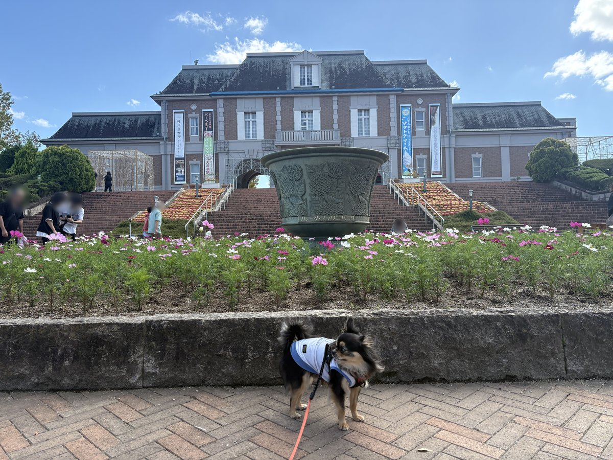
誕生日だけど、予約は何もしていなかった
10月3日はうちのチワワ、こつぶの誕生日。どこかに連れて行きたかったが、前日の夜になっても予約は何もしていなかった。出発も昼から。
予約なしで行けて、ドッグランがあって、行ったことがない所。それで選んだのが神戸市北区の道の駅、神戸フルーツ・フラワーパーク大沢だった。入場料も駐車場もドッグランも無料で、ドッグランは土日しか開かない。この日はちょうど土曜日だった。
駐車場は広い。正面の建物がまず目に入る
着いたのは12時半前。駐車場はかなり広く、土曜の昼でも空きがあった。駐車場とトイレは24時間使える。
駐車場から歩くと、ヨーロッパの駅舎のような建物が正面に見えてくる。大階段の前の花壇にはコスモスが咲いていた。

園内はリードを付ければ犬と一緒に歩ける。入ってすぐの所に「犬はマナーを守って散歩させましょう」という看板があり、リードを必ず付ける、フンは持ち帰る、マーキングはさせない、犬の運動はドッグランで、と書いてあった。果樹園のエリアは犬が入れない。
まずはドッグランへ
この日のいちばんの目的。ドッグランは1か所で、中が小型犬のエリアと、どの大きさの犬も入れる共用エリアに分かれていた。チワワのこつぶでも、大きい犬を気にせずに遊べる。
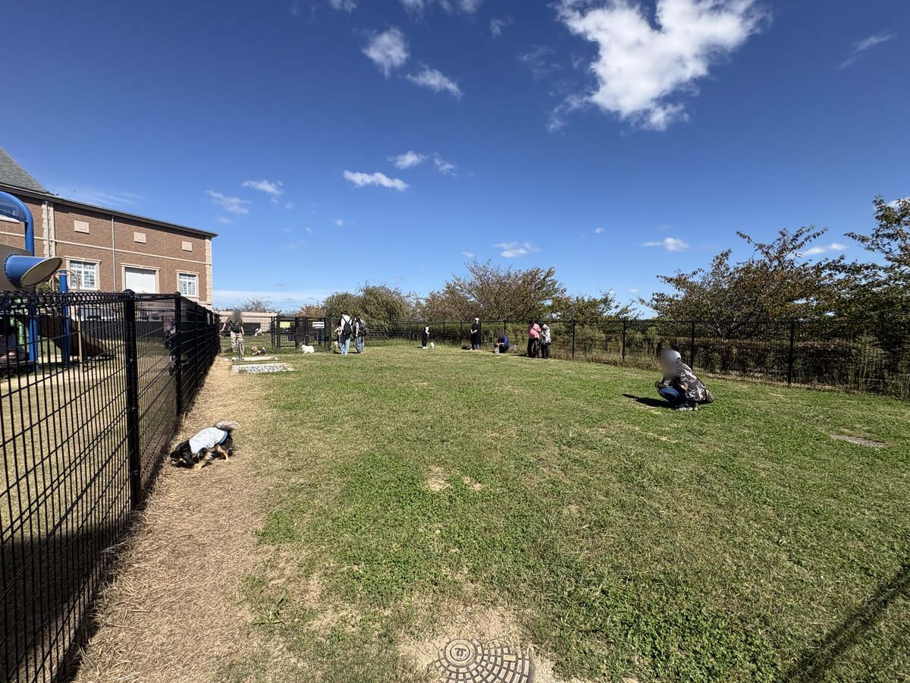
入口には利用規定の看板がある。ワクチンや狂犬病の予防接種を受けていない犬、発情中のメス犬は入れない。1人が同時に放せるのは1頭まで。ランの中でのおやつ・フードは控えるように、とも書いてある。
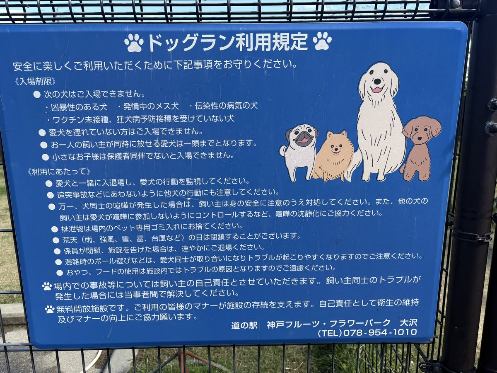
開いているのは土日の9:30〜16:00
出かける前に調べた情報では16:30までだったが、現地の掲示は9:30〜16:00だった。月〜金は休みで、イルミネーションの期間は時間が変わるという貼り紙もあった。雨の日や施設の管理で閉まることもある。昼から出かけるなら、着いたら先にランへ行くのがいい。
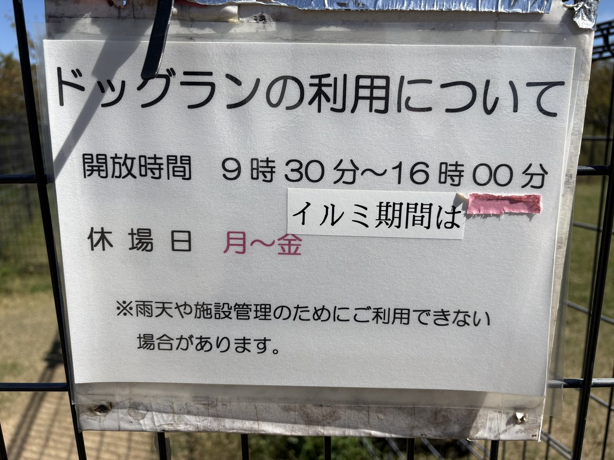
園内を散歩する
ランのあとは園内をぐるっと散歩した。「BE KOBE」の文字の前の池、アーチのある回廊、時計台のある中央広場と、写真を撮りたくなる場所が多い。
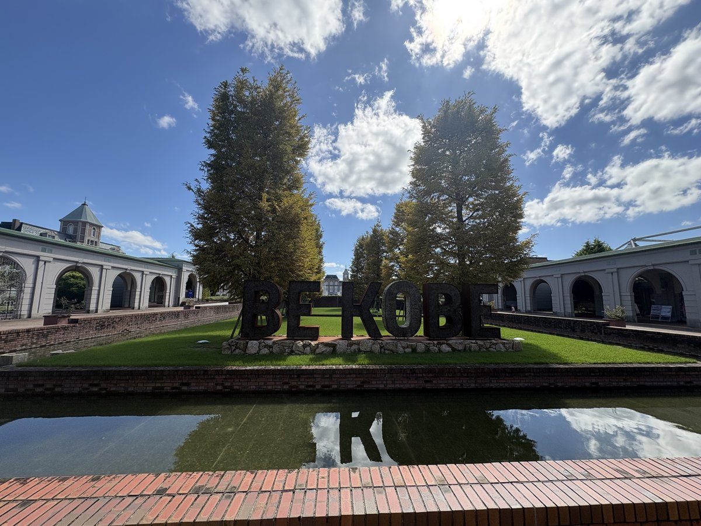
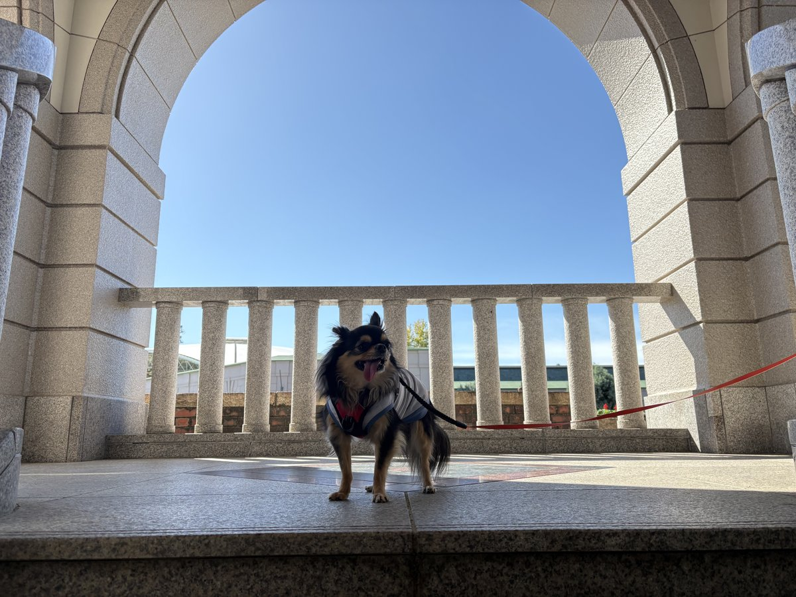
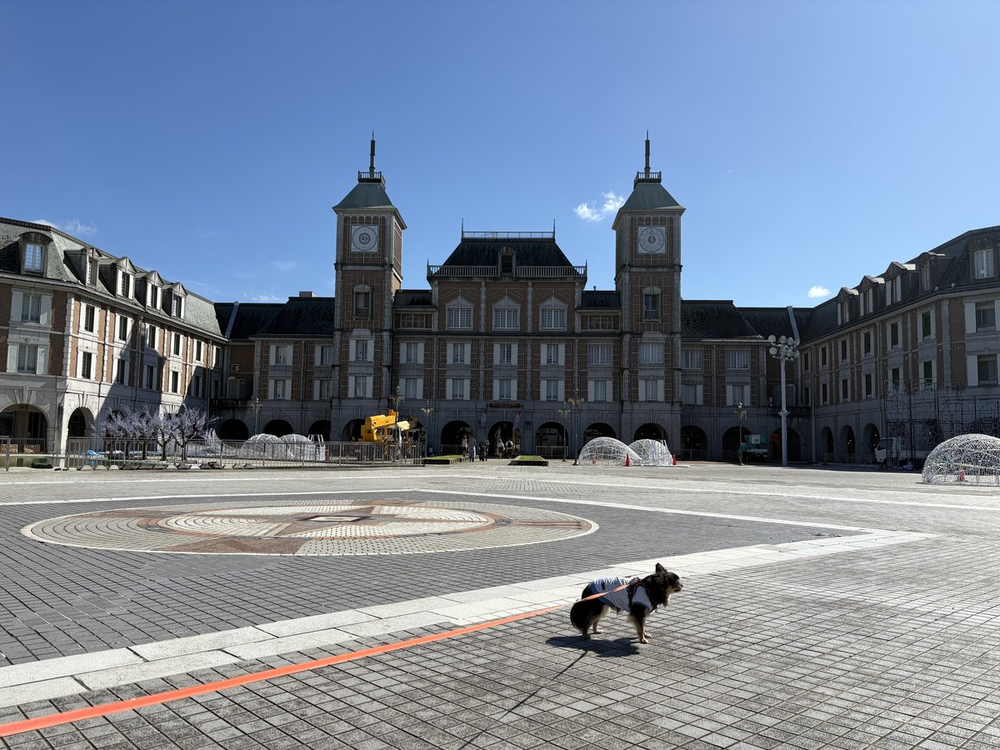
中央広場では、イルミネーションの飾りを組み立てている最中だった。ドッグランの時間が変わる「イルミ期間」はこれのことだと思う。
犬と一緒に乗れるゴーカート
この日いちばん珍しかったのがゴーカート。犬を連れて乗れるゴーカートは、ほかではあまり見たことがない。
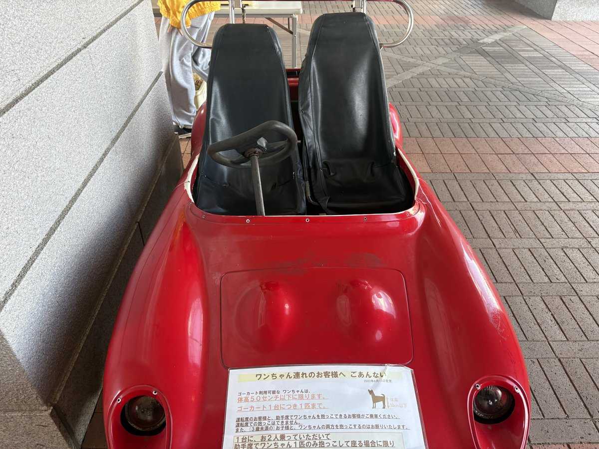
ただし条件がある。乗れるのは体高50cm以下の犬で、1台に1匹まで。2人で乗って、助手席の人が犬を抱っこする場合だけ乗れる。運転席で抱っこはできない。1人で犬と乗ることはできず、3歳未満の子どもと犬を両方抱っこして乗ることもできないので注意。
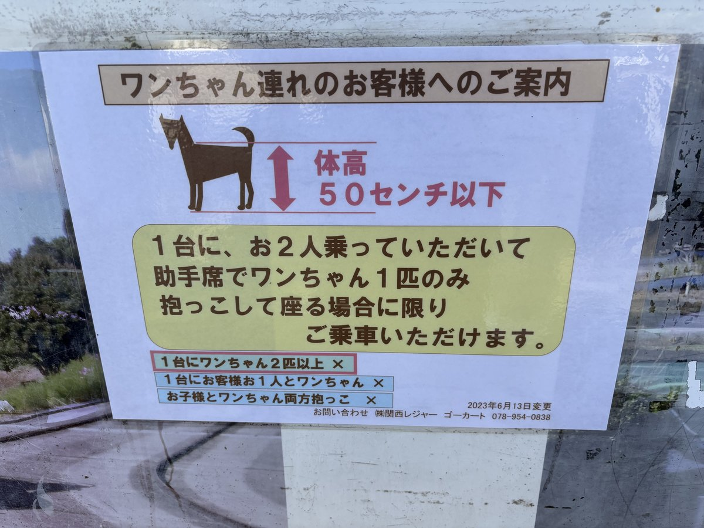
エンジンの音や振動にびっくりしそうな犬は避けるように、とも書いてあった。こつぶは楽しそうだった。
ソフトクリームと多目的広場
ひと休みにソフトクリーム。
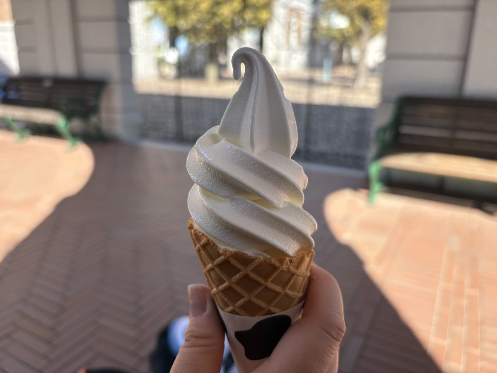
奥には芝生の多目的広場が広がっている。ただし看板によると、ここでは犬を放して運動させてはいけない。走らせたいならドッグランへ。
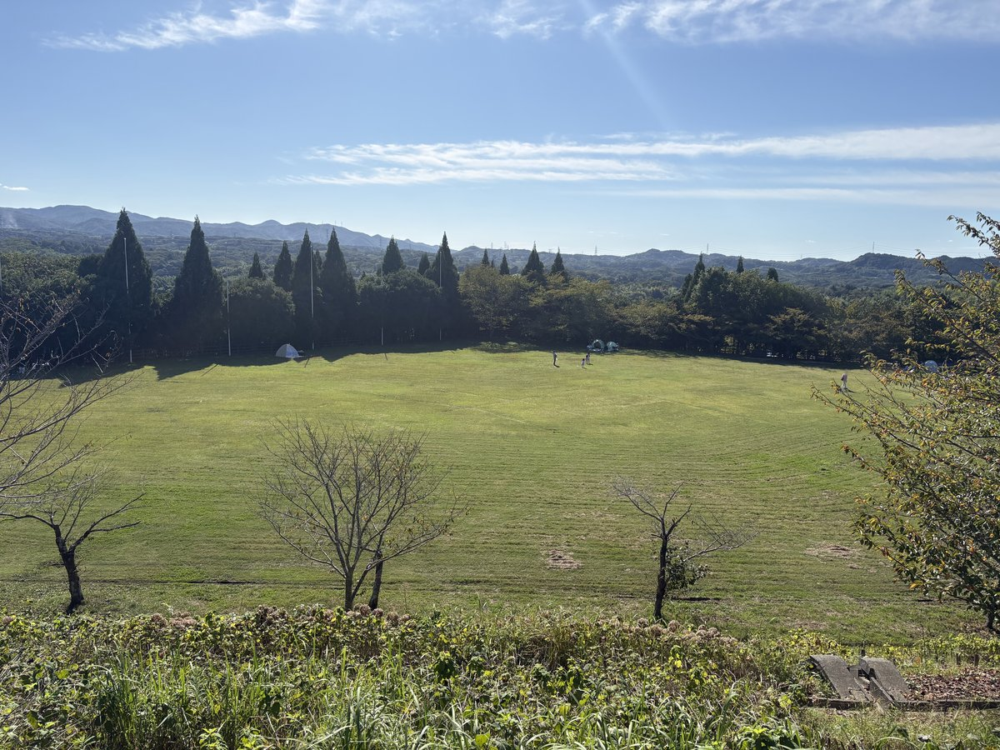
遊園地のエリアには観覧車やジェットコースターもあり、手前の花壇は真っ赤な花で埋まっていた。
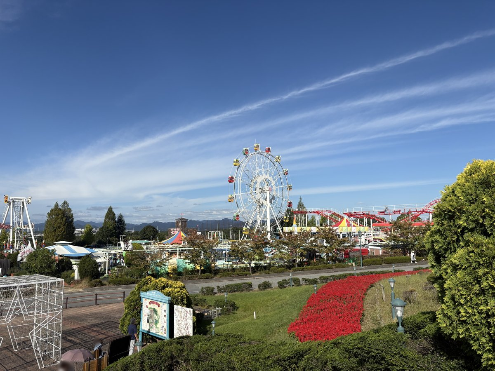
ごはんは帰りのサービスエリアで
園内にはテラス席で犬と一緒に入れるレストランもあるが、この日のごはんは結局、帰り道のサービスエリアで済ませた。12時半前に着いて、帰りの車に乗ったのは15時半すぎ。3時間あまりいたことになる。
帰りの車では、こつぶは舌を出して寝ていた。よく遊んだ誕生日だった。
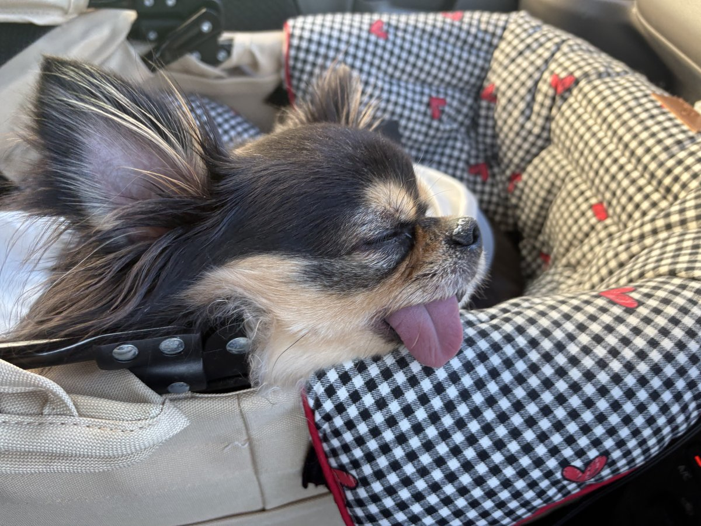
犬連れで行くポイントまとめ
- 料金: 入場・駐車場・ドッグランとも無料
- ドッグラン: 土日の9:30〜16:00（月〜金は休み・イルミネーション期間は時間が変わる・雨天などで閉まる日あり）
- ランの中: 小型犬エリアと共用エリアに分かれている。1人1頭まで、おやつ・フードは控える
- ワクチン: 未接種の犬は入れない。証明書を求められることがあるので持参が安心
- ゴーカート: 体高50cm以下の犬1匹まで。2人乗りで助手席の人が抱っこ
- 園内: リードを付ければ散歩できる。果樹園は不可、多目的広場で放すのは不可
- 駐車場とトイレ: 24時間使える